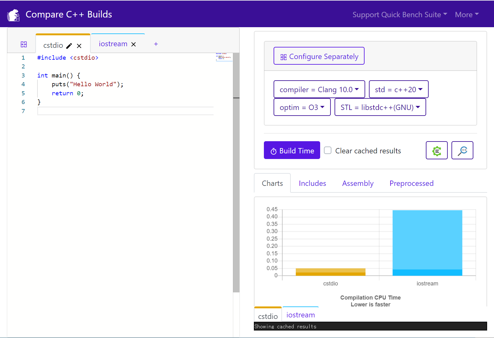

C++ オンラインコンパイラ¶
主要なオンラインコンパイラ¶
C++ プログラムのコンパイル、実行、共有ができる Web サイトです。
| コンパイラ | 日本語入出力 | インタラクティブ | 複数ファイル | |
|---|---|---|---|---|
| Wandbox | ||||
| Compiler Explorer (Execution モード) |
||||
| Ideone | ||||
| GDB Online | ||||
| paiza.io | ||||
| repl.it | ||||
| C++ Shell |
* 印は trunk
その他のツール¶
Compiler Explorer¶
Compiler Explorer は、C, C++, Rust, Swift などのソースコードをコンパイルしてアセンブリを表示するオンラインコンパイラです。複数タブを使って、GCC, Clang, MSVC, ICC などのコンパイラや、コンパイルオプションを変えたときの結果を比較できます。
入力例
int square(int num)
{
return num * num;
}
出力
square(int):
push rbp
mov rbp, rsp
mov DWORD PTR [rbp-4], edi
mov eax, DWORD PTR [rbp-4]
imul eax, DWORD PTR [rbp-4]
pop rbp
ret
Compiler Explorer には、Web 上のファイルを #include "URL" でインクルードできる独自拡張機能があります。この機能を使うと、GitHub などに公開されているシングルヘッダライブラリをプログラムの中で簡単に使えます（例: https://godbolt.org/z/OV-vGQ）
Quick Bench¶
Quick Bench は、google/benchmark による C++ プログラムの実行時間の計測と、その結果のビジュアライズができるオンラインコンパイラです。棒グラフによる比較、アセンブリの表示、グラフ画像のダウンロード、URL による結果のシェアなどの機能があります。
例: http://quick-bench.com/O1QdfCc73docKGKjaYBxWG6a9AU

Build Bench¶
Build Bench は、異なる C++ ソースやビルドオプションどうしのビルド時間を比較できる Web サービスです。

C++ Insights¶
C++ Insights は、ラムダ式、range-based for, 構造化束縛などで何が起こっているのかを、プログラムを単純なソースコードに分解することで可視化するオンラインのツールです。
入力例
#include <cstdio>
int main()
{
const char arr[10]{2,4,6,8};
for(const char& c : arr)
{
printf("c=%c\n", c);
}
}
#include <cstdio>
int main()
{
const char arr[10] = {2, 4, 6, 8, '\0', '\0', '\0', '\0', '\0', '\0'};
{
char const (&__range1)[10] = arr;
const char * __begin1 = __range1;
const char * __end1 = __range1 + 10l;
for( ; __begin1 != __end1; ++__begin1 )
{
const char & c = *__begin1;
printf("c=%c\n", static_cast<int>(c));
}
}
}
cee.studio¶
cee.studio は、C, C++ プログラムを実行して、セグメンテーション違反などメモリに関する問題が発生したときに、その箇所と原因をわかりやすく表示する機能を持つオンラインコンパイラです。バッファオーバーラン、Null ポインタの参照外し、未初期化変数の利用などの問題を明らかにします。オンライン IDE で「Run in Guarrail」モードで実行することでメモリのデバッグを行えます。
入力例
#include <iostream>
int main()
{
const char s[] = { 'A', 'B', 'C' };
std::cout << s << '\n';
}
出力例
Memory access error: reading from the outside of a memory space; abort execution.
# Reading 4 bytes from 0x981cdd4 will read undefined values.
#
# The memory-space-to-be-read (start:0x981cdd4, size:3 bytes) is bound to 's' at
# file:/prog.cc::5, 0
#
# 0x981cdd4 0x981cdd6
# +------------------------------+
# | the memory-space-to-be-read |......
# +------------------------------+
# ^~~~~~~~~~
# the read starts at the memory-space begin.
#
# Stack trace (most recent call first) of the read.
# [0] file:/musl-1.1.10/src/string/strlen.c::91, 3
# [1] unknown_location (report this ::244)
# [2] file:/prog.cc::7, 5
# [3] [libc-start-main]
Segmentation fault